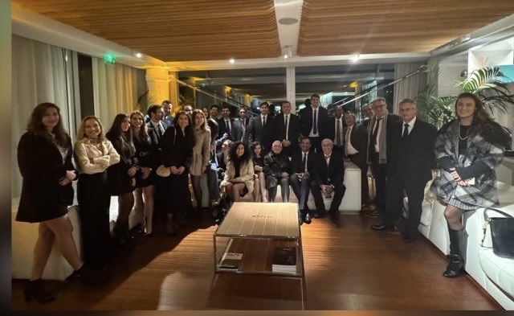

Aile A3
- Secrétariat
- 04 92 03 63 36 · 04 92 03 60 38
- Cadre de Santé
- 04 92 03 60 32
- Infirmières
- 04 92 03 64 46
CHU de Nice · Hôpitaux Archet 2 et Pasteur 2
Une équipe hospitalo-universitaire dédiée aux pathologies digestives, abdominales et endocriniennes, avec une activité de recours, de recherche clinique et d'enseignement.

Domaines de prise en charge
Chaque expertise renvoie vers les chirurgiens référents. Les textes pourront être enrichis ensuite avec les parcours patients, brochures, protocoles et liens institutionnels.
Équipe médicale
Les fiches détaillées prévoient les expertises, publications, lien Doctolib et coordonnées de secrétariat propres à chaque praticien.
Patients et visiteurs
Les coordonnées ci-dessous sont prêtes pour la mise en ligne. Des emplacements restent prévus pour ajouter ensuite les contacts par chirurgien ou par consultation spécialisée.
Localisation
151 route St Antoine de Ginestière
CS 23079 · 06200 Nice
Recherche et publications
Le service participe à la recherche clinique, à la valorisation scientifique et au développement de parcours innovants dans les principales spécialités de chirurgie digestive : cancérologie, transplantation, chirurgie bariatrique, pathologies pariétales, chirurgie hépato-biliaire, pancréatique, oeso-gastrique, colorectale et pelvienne.
Cette page peut accueillir les publications récentes, les essais cliniques ouverts, les communications en congrès, les collaborations universitaires et les travaux menés avec les équipes médicales et paramédicales du CHU de Nice.
Voir le fil d'actualités scientifiquesEnseignement
Le service assure une mission d'enseignement auprès des étudiants hospitaliers, internes, assistants et chefs de clinique. La formation associe compagnonnage opératoire, réunions de concertation, enseignements universitaires, simulation, discussion bibliographique et apprentissage de la décision chirurgicale.
Cette page pourra être enrichie avec le programme pédagogique, les modalités d'accueil des internes, les ressources de formation, les journées scientifiques et les informations utiles pour les étudiants.
Fil d'actualités
Les éléments ci-dessous sont des exemples modifiables. Vous pourrez y ajouter les publications, congrès, recrutements, innovations et informations pratiques du service.
Accès patients
Les boutons Doctolib sont prévus dans chaque fiche chirurgien. Remplacez simplement les liens temporaires par les liens officiels des praticiens dès qu'ils sont disponibles.